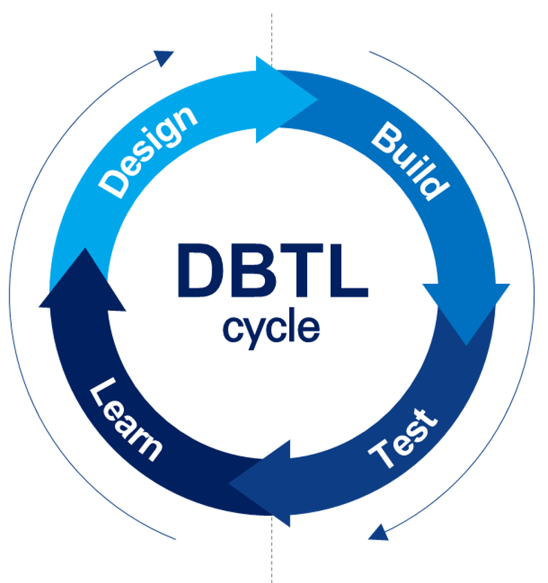

- AI driven experimental design
- Speed up DBTL cycle by automation
- High throughput technologies
- Facilitating the industrialization
VISION
Our vision is to build a resilient, integrated biomanufacturing platform that empowers researchers across both public and private sectors.
By continuously advancing bio-manufacturing capabilities centered on the biofoundry model, we aim to drive transformative innovation and lead the evolution of the global bioeconomy.

MISSION
Our mission is to enhance the technological competitiveness of engineering biology and lay the foundation for accelerated biomanufacturing by establishing state-of-the-art biofoundry infrastructure.